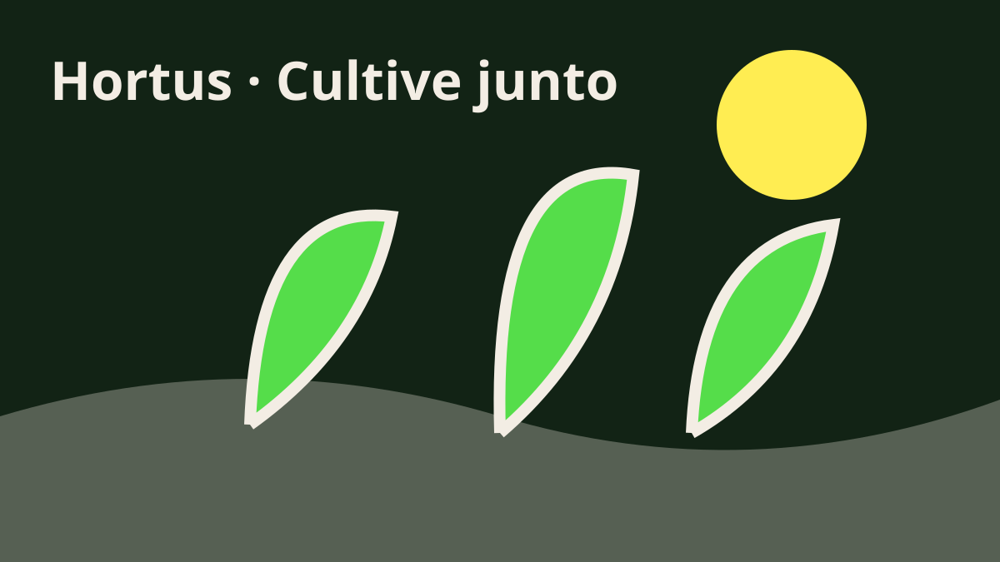

HORTUS · GALERIA
Imagens do cultivo e da convivência
Canteiros, plantas e momentos de cuidado inspiram novas ideias para a cidade.
Conhecer os formatos
GALERIA
Um jardim de possibilidades
Conheça cenas de cultivo comunitário em fotografia e ilustrações. As legendas descrevem cada imagem para facilitar a navegação.
CULTIVAR É COMPARTILHAR
Cada espaço conta uma história
Registros de atividades podem inspirar outras pessoas e documentar o que o grupo aprende. Antes de publicar imagens, peça autorização às pessoas retratadas.